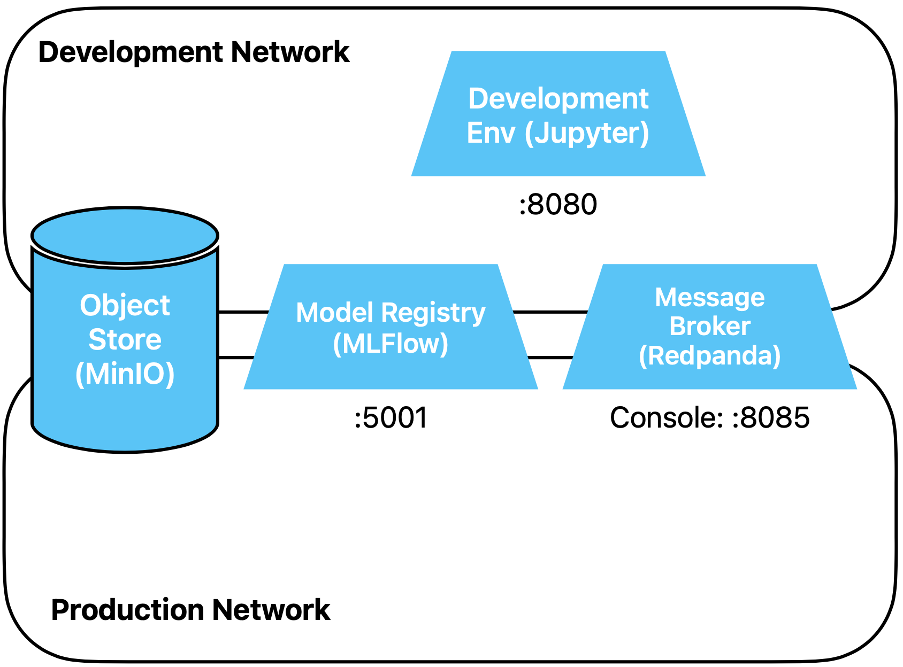

Stream Processing Infrastructure
In dieser Übung setzen wir den Message Broker Dienst auf und lernen diesen kennen. Wird
verwenden als Message Broker
Redpanda. Redpanda
beschreibt ihr Produkt wie folgt:
Redpanda is the most complete, Apache Kafka®-compatible streaming data platform, designed
from the ground up to be lighter, faster, and simpler to operate. Free from ZooKeeper™ and
JVMs, it prioritizes an end-to-end developer experience with a huge ecosystem of connectors,
configurable tiered storage, and more.
Für uns in der Übungsinfrastruktur ist vor allem die einfachere, leichtegwichtigere Installation
im Vergleich zum Standard
Apache Kafka wichtig.
Vorbereitung
Speichere alle deine offenen Notebooks. Stoppe alle Container, indem du dich ins Top-Level
Verzeichnis der Übungen begibst (dort, wo das File docker-compose.yml liegt) und
docker compose down ausführst. Wenn du die Container im Vordergrund laufen hast, kannst
du in diesem Terminal die Prozesse mit ctrl-c stoppen.
Kommentiere im Top-Level Compose File docker-compose.yml den Message Broker Dienst ein.
Starte alle Container wieder.
Übungen
Redpanda Service
Wir hatten in der ersten Übung die beiden Docker Netzwerke development und
production definiert. In welches dieser Netze binden wir den Message Broker ein?
Lösungsvorschlag
Korrekt wäre, Produktion und Entwicklung hier auf eine geeignete Art und Weise streng zu
trennen, entweder durch zwei separate Instanzen oder durch anderweitige Massnahmen. Für
den Workshop begrenzen wir die Komplexität aber, indem wir den gleichen Message Broker
in beiden Docker Netzwerken development und production verwenden, auch
wenn diese Lösung ist nicht ideal ist.
Schau dir das compose file des Message Brokers an. Naturgemäss ist für einen
Infrastruktur-Dienst, welcher darauf ausgelegt ist, unter Kubernetes hochverfügbar und
horizontal skalierbar zu laufen, das compose File etwas komplexer.
- Via welchen Port kannst du von ausserhalb Docker auf den Message Broker zugreifen?
- Welche zwei APIs werden im File definiert?
- Über welche URI nutzen wir den Broker, wenn wir via Kafka (und nicht via HTTP)
zugreifen?
Lösungsvorschlag
- Von ausserhalb Docker kannst du nur über die Redpanda Console zugreifen, via.
den Port 8085: Probiere dies einmal (message-broker Service in codespaces).
- Einerseits das Kafka API, andererseits der Pandaproxy (ein HTTP REST API)
- Die Antwort findest du in der Direktive command, etwas versteckt:
--advertise-kafka-addr internal://message-broker:9092
Unsere Umgebung sieht nun so aus, wobei der Message Broker korrekterweise nur ins Production
Network gehören würde. Die bereits erstellte Batch-Inference Pipeline ist in untenstehendem
Diagramm nicht abgebildet.

Topic mit der Console erstellen
Wir benötigen nun ein Topic, um darüber Nachrichten verschicken zu können.
Verwende die Redpanda Console (message-broker Service in codespaces), um ein Topic mit
dem Namen
dev_sandbox zu erstellen. Belasse sonst alles bei den Defaults.
Command Line Tool rpk
In jedem Redpanda Broker-Container ist das Redpanda CLI Tool
rpk installiert. Hier
findest du die
Command Reference
von
rpk.
Verwende rpk direkt im laufenden Message Broker Container, um Informationen
zum laufenden Cluster anzuzeigen.
Lösungsvorschlag
Du führst mittels docker exec interaktiv (-it) im Container message-broker den Befehl
rpk cluster info aus:
docker exec -it message-broker rpk cluster info
Schicke nun mindestens zwei Nachrichten im vorher erstellten Topic (hint:
verwende rpk topic
produce).
Lösungsvorschlag
- docker exec -it message-broker rpk topic produce dev_sandbox
- Nachricht tippen und mit abschliessen
- Mit ctrl-c abbrechen.
Schau in der Redpanda Console, ob du die Nachrichten siehst.
Lösungsvorschlag
Unter Topic auf das dev_sandbox Topic klicken.
Nun konsumiere eine einzelne Nachricht.
Lösungsvorschlag
docker exec -it message-broker rpk topic consume dev_sandbox --num 1
Wenn du auf die gleiche Weise noch eine Nachricht konsumierst, erhälst du nocheinmal die erste
Nachricht. Kafka bzw. Redpanda trackt nicht, wer welche Nachrichten konsumiert, und Nachrichten
können nicht selektiv gelöscht werden. Diese Implementation als append-only log ist einer der
Gründe, weshalb die Architektur so gut horizontal skaliert.
Messages haben einen
consumer
offset, welcher verwendet wird, um Nachrichten ab einem spezifischen Punkt zu lesen. Es
liegt in der Verantwortung des Consumers, diesen Offset zu tracken oder Kafka mitzuteilen, bis
zu welchem Offset gelesen wurde.
High-Level APIs machen dies automatisch, wenn wir ein Low-Level API wie rpk verwenden, müssen
wir dies selber tun.
Schau in der Redpanda Console nach, welchen Offset die zweite Nachricht hat, und lies genau
diese.
Lösungsvorschlag
Du gibst den zu lesenden Offset mit --offset an:
docker exec -it message-broker rpk topic consume dev_sandbox --offset 1
Consumer Groups
Ein Konzept, welches wir noch grob kennen müssen, ist dasjenige der
Consumer Groups.
Über diese können sich Consumer in Gruppen einteilen. Warum Consumer Groups notwendig sind,
kannst du
hier
nachlesen.
Für uns wichtig ist, dass eine message von genau einem Consumer je Consumer Group gelesen werden
kann. Lesen wir eine message als Teil einer Consumer Group, können wir (automatisch) den offset
der message committen, so dass diese message danach nicht ein zweites mal gelesen wird.
Konsumieren mit kafka-python
Nun verwenden wir die library
kafka-python, um mit Nachrichten
zu konsumieren. Die third-party library Kafka-python ist einfacher zu verwenden als die library
confluent-kafka-python des
Herstellers von Kafka, hat jedoch auch etwas weniger Features.
Erstelle ein neues Notebook, um mit dem folgenden Code zu spielen.
Der folgende Code importiert den Kafka Consumer und instanziert den Consumer mit einer Consumer
Group ID. Dadurch wird beim Lesen der consumer offset einer message automatisch committet, und
Nachrichten qwerden nicht mehrfach gelesen.
Soll nicht automatisch committet werden, übergib auch die auskommentierten Argumente.
from kafka import KafkaConsumer
consumer = KafkaConsumer(
bootstrap_servers=["message-broker:9092"],
group_id="sandbox-group",
# auto_offset_reset="earliest",
# enable_auto_commit=False,
)
Abonniere unser Topic
consumer.subscribe("dev_sandbox")
Und der folgende Code liest kontinuierlich und gibt jede gelesene message mit einigen Metadaten
aus.
try:
for message in consumer:
topic_info = f"topic: {message.partition}|{message.offset}"
message_info = f"key: {message.key}, {message.value}"
print(f"{topic_info}, {message_info}")
except Exception as e:
print(f"Error occurred while consuming messages: {e}")
finally:
consumer.close()
Verwende rpk, um einige messages zu schicken und betrachte, wie sie gelesen werden.
Experimentiere mit den auskommentierten Argumenten, um ein Gefühl dafür zu bekommen, wie die
Offsets funktionieren.
Produzieren mit kafka-python
Als nächstes schreiben wir asynchron messages. Stoppe im Notebook den Kernel, falls obige Zelle
immer noch läuft. Wiederum importieren wir, instanziieren danach
einen producer und setzen unser topic.
from kafka import KafkaProducer
from kafka.errors import KafkaError
producer = KafkaProducer(
bootstrap_servers = "message-broker:9092"
)
topic = "dev_sandbox"
Nun definieren wir zwei Callbacks.
def on_success(metadata):
print(f"Message produced to topic '{metadata.topic}' at offset {metadata.offset}")
def on_error(e):
print(f"Error sending message: {e}")
Schliesslich produzieren wir drei Nachrichten asynchron und flushen und schliessen den producer
wieder.
for i in range(1, 4):
msg = f"Message with id #{i}"
future = producer.send(topic, value=str.encode(msg))
future.add_callback(on_success)
future.add_errback(on_error)
producer.flush()
producer.close()
Die Messages sind nun in der Queue. Um sie anzuzeigen, schaue entweder in der Redpanda Console
nach, oder führe erneut den Consumer Code vom Anfang des Notebooks aus, oder verwende
rpk.
Generator für Mushroom Daten
Kehren wir zurück zu unserem Datenset über Pilze, mit welchem wir ein Modell trainiert und
bereits eine Batch Inference Pipeline geschrieben haben. Wir möchten nun anstelle einer Batch
Prediction im Rahmen unserer neu aufgesetzten Event-getriebenen Architektur in realtime
Predictions machen. Dazu brauchen wir eine Quelle, welche unsere produktiven Inferenz-Requests
simuliert. Die Quelle soll kontinuierlich Pilzdaten generieren und als messages im Sinne eines
Request for Prediction nach Redpanda schreiben.
Das Endprodukt soll ein Python Skript sein, welches über die Kommandozeile aufgerufen werden
kann. Das Skript soll mushroom_datagen.py heissen und im /notebooks
Verzeichnis des Development Server liegen.
Das Skript entwickeln kannst du entweder innerhalb eines Jupyter Notebooks, oder direkt als
Skript mit VS Code, wie du möchtest.
Wenn Du das Skript von ausserhalb der Container-Umgebung ausführen willst, kannst du dies mit
dem folgenden Befehl machen:
docker compose run --rm --name=datagen --entrypoint=python3 development_env mushroom_datagen.py
Num zum zu entwickelnden Skript. Du bekommst den Rahmen vorgegeben und entwickelst dann einzelne
Funktionen.
Verwende die folgenden Imports. Du kannst natürlich auch weitere Imports hinzufügen, wenn dein
Code welche braucht.
import argparse
import sys
import time
from loguru import logger
import pandas as pd
from kafka import KafkaProducer
from kafka.errors import KafkaError
Nun schreibe die notwendigen Funktionen, um nach Kafka zu senden:
- initialisierte den Kafka Producer (ohne Serializer)
- schreibe die Success- und Error Callbacks. Die Callbacks sollen nur eine entsprechende
Debug- oder Error Meldung loggen und haben sonst keine weitere Aufgabe.
- schreibe die Funktion, welche eine Message an Kafka sendet
producer = KafkaProducer(
# your code here
)
def on_success(metadata):
logger.debug() # your code inside the parenthesis
def on_error(e):
logger.error() # your code inside the parenthesis
def push_to_kafka(event, topic):
# your code here
# send an utf-8 encoded message with key=b'key'
# add callbacks
# flush
Lösungsvorschlag
# everything quite similar to the examples above (except for the utf-8 encoding)
producer = KafkaProducer(
bootstrap_servers = "message-broker:9092",
)
def on_success(metadata):
logger.debug(f"Message produced to topic '{metadata.topic}' at offset {metadata.offset}")
def on_error(e):
logger.error(f"Error sending message: {e}")
def push_to_kafka(event, topic):
future = producer.send(topic=topic, key=b'key', value=event.encode('utf-8'))
future.add_callback(on_success)
future.add_errback(on_error)
producer.flush()
Als Nächstes schreibe eine Funktion, welche jedesmal, wenn sie aufgerufen wird, einen einzelnen
Inferenz-Request als json zurückgibt, in der folgenden Form:
{
"cap-diameter":1382.0,
"cap-shape":5.0,
"gill-attachment":3.0,
"gill-color":4.0,
"stem-height":0.7349878012,
"stem-width":1583.0,
"stem-color":11.0,
"season":1.4574740759
}
Die Werte-Bereiche sollten in etwa denen aus dem Trainingsdaten-file entsprechen, sie dürfen
also nicht komplett zufällig sein. Insbesondere sollten keine kategorischen Werte produziert
werden, die ausserhalb des Intervalls [min(col), max(col)] ein jeder Spalte liegen, und
keine negativen Werte.
def generate_event(# whatever you need):
# your code here
return # somehing as json
Lösungsvorschlag
Hier eine mögliche Umsetzung mittels zweier Funktionen.
Zuerst werden die Trainingsdaten aus dem Object Store geladen. Dann wird ein Kernel
Density Estimator auf die numerischen Spalten gefittet, um eine einfache Möglichkeit zu
haben, zufällige, aber ähnliche Werte zu generieren.
Um den Output zu generieren, sampeln wir die numerischen Spalten. Die kategorischen
ziehen wir zufällig.
from random import randrange
from sklearn.neighbors import KernelDensity
def setup_data():
# fetch Training Dataset so we have a reference
df = pd.read_parquet('s3://traindata/train_raw.parquet',
storage_options={"anon": False}).drop("class", axis="columns")
# setup column names
categoricals = ['cap-shape', 'gill-attachment', 'gill-color', 'stem-color']
numericals = [c for c in df.columns if c not in categoricals]
# fit an estimator to the numerical columns
kde = KernelDensity()
kde.fit(df[numericals])
return kde, numericals, categoricals, df
def generate_event(kde, numericals, categoricals, df):
# take one row so we have something to fill in our generated values
new_row = pd.DataFrame(data=df.head(1))
# generate one row
new_row[numericals] = kde.sample(1)
for col in numericals:
# we are being lazy, when the kde yields a negative, just replace with mean
if new_row[col][0] < 0:
new_row[col] = df[col].mean()
for col in categoricals:
# for the categoricals, use a bounded random value
new_row[col] = randrange(df[col].min(), df[col].max()+1)
for col in new_row.columns:
# make sure the datatypes match the reference
new_row[col] = new_row[col].astype(df[col].dtype)
return new_row.iloc[0].to_json()
Schliesslich musst du das ganze in ein Kommandozeilenskript verpacken. Das folgende Snippets
legt die notwendigen Argumente fest und ruft die Hauptfunktion run() auf (welche du
gleich schreiben wirst):
if __name__ == "__main__":
parser = argparse.ArgumentParser(
description="Simulates inference requests by sending mushroom dataset features to kafka."
)
parser.add_argument(
"-t",
"--topic",
type=str,
help="Kafka topic to send to",
default="mushroom_inference_request",
)
parser.add_argument(
"-s",
"--sleep_interval",
type=int,
help="Number of milliseconds to sleep between bursts",
default=1000,
)
parser.add_argument(
"-b",
"--burst_size",
type=int,
help="Number of messages to send together",
default=1,
)
parser.add_argument(
"-r",
"--randomness",
type=int,
help="Maximum number of seconds to wait between bursts",
default=1,
)
parser.add_argument(
"-v",
"--verbose",
action='store_true',
help="Log content of each message sent to stderr",
)
args = parser.parse_args()
if not args.verbose:
# increase loglevel from the default DEBUG to INFO to avoid logging every message
logger.remove(0)
logger.add(sys.stderr, level="INFO")
logger.info("Start sending messages to kafka.")
run(
topic = args.topic,
sleep_interval = args.sleep_interval,
burst_size = args.burst_size,
randomness = args.randomness
)
Die run() Funktion soll in einem Endlos-Loop Bursts von Messages an Kafka senden, und
nach jedem Burst die definierte Zeit schlafen.
def run(topic, sleep_interval, burst_size, randomness):
# maybe you need code here
while True:
# your code here
Lösungsvorschlag
Ein Lösungsansatz:
def run(topic, sleep_interval, burst_size, randomness):
kde, numericals, categoricals, df = setup_data()
while True:
for _ in range(burst_size):
push_to_kafka(event=generate_event(kde, numericals, categoricals, df), topic=topic)
try:
sleep_milliseconds = sleep_interval + randrange(0, randomness*1000)
except ValueError:
# if randomness*1000 < 1
sleep_milliseconds = sleep_interval
time.sleep(sleep_milliseconds / 1000)
Fertig! Nun testen wir das Skript. Wenn du es wie oben beschrieben abgelegt hast, starte es
mittels
docker compose run --rm --name=datagen --entrypoint=python3 development_env mushroom_datagen.py -v
Wenn alles klappt,
- solltest du nun in der Konsole sehen, wie messages produziert und gesendet werden,
- in der Redpanda Konsole kannst du unter dem Topic mushroom_inference_request
sehen, wie die Meldungen ankommen,
- mit deinem Notebook mit dem Consumer Code aus dem Anfang dieser Übung kannst du die
Nachrichten lesen
Stoppe nun den Generator wieder.